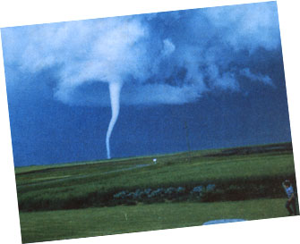
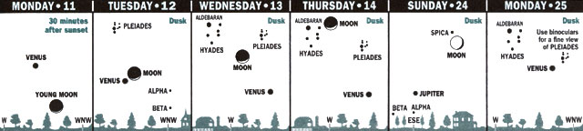

Seasons
For skywatchers, April and May are going to be blockbusters.
If you're looking for that wonderful thing called variety, you certainly can find it in nature. And especially in spring. Among our topics in this column for April and May are tornadoes, spring peepers, eclipses, and May Day-the holiday that leads off the month of flowers.
After April, the ficklest month, comes sweet May. Weather historian David Ludlum has suggested that this lovely month should have been named Flora, after the Roman goddess of flowers, rather than May, after Maia, another Roman goddess of spring and fertility (actually Maia was originally a Greek goddess).
The halfway point of spring falls on May 6, though in the northern United States and southern Canada, frosts and chilly weather are not uncommon early in the month. So it is not fair to say that the entire month is abloom everywhere. Memorial Day was put at the end of May to make sure that even in the northernmost United States there would be plenty of flowers to lay on graves of fallen soldiers.
As usual, it is not quite at the mathematically accurate halfway point of a season that the "cross-quarter day" gets celebrated. In spring, the cross-quarter holiday is May Day, the first of May, a day of merriment and many innocent and sweet traditions. Some are now little remembered: for instance, the custom of having maidens wash their face with May dew gathered at dawn on May Day to assure beauty.
The dance around the Maypole and the selection of a May Queen are traditions of old England that even flourished in parts of the United States until early this century. Another delightful tradition that has survived to the present (in my wife's family, for one!) is the custom of children rising early to gather wildflowers and secretly leaving them on the doorstep of a friend, neighbor, or mother. They knock, run, hide, and watch!
Of course, long ago, the first of May was also the occasion for the dark revelries and human sacrifices of the Celtic holiday Beltane, fire of the god Bel. This occurred halfway through the Druidic year that began on Samhain, the predecessor of Halloween. Whereas Samhain marked the beginning of the year at its low point in the cycle of the living world, Beltane marked the middle of the year when growth was at its strongest.
Diagrams for dusk and dawn show scenes about 45 minutes after sunset or before sunrise, as viewed from 40° north latitude (approximately correct for the U.S. and southern Canada).
-Adapted from Sky Calendar, Abrams Planetarium, Michigan State University, East Lansing, MI 98824.
Although May can bring us some of our most pleasant days, it is also prime time in many parts of the Midwest for the most violent of all atmospheric phenomena-the tornado.
Tornado funnels range from tens of yards to about a mile across. They may pass in a matter of seconds at forward speeds of seldom more than 40 or 50 mph. But it is the tremendous upward suction and especially the rotational speeds of up to 300 mph that can be deadly.
There is much to say about these awesome storms, but I want to focus here on safety. Many homes in tornado-prone parts of the country have special storm shelters underground-and that is the place to be when a tornado is heading your way. Mobile homes are crumpled by even small tornadoes. There's an important tornado safety precaution given in older books that needs to be corrected: The southwest corner is not the safest place in the house to be when a tornado, moving southwest to northeast-as they most often do-hits the house. The best advice is to put as many sturdy interior walls as possible between you and the tornado and get down, preferably underneath something that will protect you from falling debris.
Good news is that the NEXRAD system of Doppler radar is in the process of being installed around the United States. These radar systems have already made it possible to give people many more minutes' worth of warning that a tornado is about to descend from the clouds.
April and May are particularly interesting months in astronomy this year, with April's conjunctions of moon and planet (see Almanac timetable and Sky Calendar diagrams) and May's two eclipses.
The lunar eclipse on the night of May 24 is a small partial one; the moon goes only one-quarter of the way into the umbra, or central shadow of the Earth. The slight staining you'll see on the lower edge of the moon before it enters the umbra is caused by the penumbra, or outer shadow, of Earth. Even such a small eclipse is fascinating to watch. If you have a telescope, see if there is, at any stage, color to part of the umbra or its edge.
The really exciting eclipse of May is an America-wide solar eclipse, the deepest visible for the 48 states as a whole until several decades from now. You MUST NOT look at the sun during this eclipse without proper eye protection, but I'll discuss in a moment what kind of protection and observing techniques are safe.
First, let's consider what kind of eclipse this will be. For most of the country, the eclipse will be a large partial one; most of the sun will be hidden. If you live in Alaska, you'll see a small partial solar eclipse, but in Hawaii none at all. A wide diagonal strip of land from the Southwest to southern Maine will be treated to more than just an ordinary partial eclipse; it will be treated to an annular solar eclipse.
Annular means "ring-shaped." In such an eclipse the moon passes centrally in front of the sun but is out too far in its orbit to appear large enough to hide the sun's entire disk. A ring of sunlight shines out from around the moon's silhouetted form. When the moon is close enough to earth during a central eclipse, the eclipse is total-all the sun's fiery disk is hidden and magnificent sights like the sun's pearly outer atmosphere appear in a sky dark enough for some stars to come out. At an annular eclipse you don't get to see grandeur as stunning as that of a total eclipse. But you do get to see a rather impressive darkening of sky and landscape, change in the color of sunlight, weird shadows on the ground, and more.
But what about getting a sight of the sun's disk itself during the eclipse? During a partial or annular eclipse, you should never look at the sun unless you use proper protection for your eyes. You can look through shade, such as a suitably large piece of welder's glass that can be bought for about $2 or less from your local welding supply store, but only with the eyes, not with binoculars or telescope. Many small telescopes come with solar filters, but often they are poorly made. Seek out your local planetarium or astronomy club for safe telescopic views, unless you want to use a perf ectly safe alternative and try projection with your telescope or binoculars.
All you do in projection is put the sun at your back and then-being careful not to ever look into the telescope or binoculars-maneuver your optical instrument until its tube (or tubes) is casting the smallest possible shadow. The sun should now be shining into your instrument and the magnified solar image can be projected onto a screen-say, a piece of cardboard. But be careful, the eyepiece of a telescope can focus great heat in front of it. On your screen you will see a disk of light (focus the optical instrument or adjust the screen's distance to make that disk sharp-edged), possibly with some curious black speckles here and there on it. What you see is the sun, with various dark looking sunspots.
By the way, even if you have no binoculars or telescope, you can project the image of the solar eclipse with something as simple as a piece of cardboard with a pinhole in it. The image projected onto a second piece of cardboard will be tiny, but you should be able to see an ever-larger bite taken out of it as the moon moves across the sun.
Before birds ever sang, there were Earth's first singers: the frogs. One of the most familiar choruses is the high-pitched, long-carrying keening of the variety of tree frogs known as Spring peepers.
Similar frogs are the West Coast's pacific tree frog, the Southwest's color-changing canyon tree frog, and the South's green tree frog, squirrel tree frog, pine tree frog, and whistling tree frog. But almost the entire eastern half of the country is home to the common tree frog and the spring peeper.
Spring peepers are very small (about 3/4 to 1 1/2" long) and distinguished from other frogs by the roughly X-shaped dark markings on their backs. These tiny creatures use pads on fingers and toes to cling to branches.
Actually, spring peepers begin their song before April and May. They are noted as one of the first voices and harbingers of spring. They can endure considerable cold. A few hours before dawn on April 20, 1983, here in southern New Jersey, I was out in a rare late snow-an inch or more was on the ground-when I heard the strong song of spring peepers. The temperature was 31° F.
(in Eastern Daylight Time)
For Partial Lunar Eclipse of May 24-25
10 P.M. EDT (May 24): First traces of penumbral shading visible around now?
10:37 P.M. EDT: Umbra first touches moon (before sunset and moonrise on West Coast).
11:30 P.M. EDT: Mideclipse.
12:23 A.M. EDT (May 25): Umbra last touches moon.
1 A.m. EDT: Last trace of penumbral shading visible around now?
The time of maximum eclipse ranges from about 9 A.M. PDT for California to almost 2 P.M. EDT for Maine. Check May issue of Sky & Telescope magazine for more information. Or, if you have a very serious interest, request a booklet of full data about the eclipse from: Jay Anderson, Prairie Weather Centre, 900-266 Graham Ave,, Winnipeg, MB, Canada R3C 3V4.
Some of the cities the eclipse will appear annular from (the Sun covering up to 93% of the sun's diameter): El Paso, Amarillo, St. Louis, Springfield (Illinois), Detroit, Toledo, Buffalo, Toronto. The cities of Kansas City and Chicago are just outside the zone of annular eclipse.
April
1. Good Friday; April Fool's Day.
2. Last Quarter Moon, 9:55 P.M. EST.
3. Faster; Daylight Saving Time begins.
10. New Moon, 8:18 Par. EDT
11. Young Moon-very thin crescent just after sunset, low, just north of due west; Farthest Moon of the year (252,568 miles from Earth).
12. Very close Moon-Venus conjunction around land after) sunset.
13. Thomas Jefferson's birthday (1843).
15. 76 inches of snow fell in Silver Like, Colorado, in 24 hours (1921).
16. Astronomy Day.
18. First Quarter Moon, 10:34 P .M. EDT Sun enters constellation Aries.
19. Lexington-Concord Day (1775).
20. Sun enters astrological sign Taurus; Earth Day.
24. Very close Moon-Spica conjunction this evening.
25. Full Moon (Pink Moon, Sprouting Grass Moon, Egg Moon, Fish Moon), 3:45 P.M. EDT; Closest Moon of the year (221,785 miles from Earth) just a few hours earlier (so very high tides); Moon-Jupiter conjunction this evening.
29. Arbor Day (except in Alaska, Georgia, Kansas, Virginia, and Wyoming).
30. May Eve; Jupiter at opposition with the Sun.
May
1. May Day, Beltane.
2. Last Quarter Moon, 10:33 PM. EDT.
6. Halfway point of springy Omaha torna do killed 3, caused $150 million damage (1975).
8. Mother's Day.
10. Annular eclipse of the Sun across U.S.; New Moon, 1:07 P.M. EDT.
13. Friday the 13th (only one of 1994); Sun enters constellation Taurus.
17. Pluto at opposition with the Sun.
18. Fast Quarter Moon, 8:49 A.M.. EDT.
19. Dark Day in New England, 1780 (caused by western forest fires).
21 Armed Forces Day; Sun enters astroIogical sign Gemini.
22. Whit Sunday (Pentecost).
23. Victoria Day (Canada).
24. Partial eclipse of the Moon; Full Moon (Flower Moon, Corn Planting Moon, Milk Moon), 11:39 P.M. EDT.
26. Mercury closest to Venus in evening sky (about 9° apart).
29. Venus very near a star in Gemini.
30. Memorial Day (observed); Mercury at greatest evening elongation.
|
 SKY CALENDAR OF SPECIAL EVENTS FOR 1994 april |
 EARTHS FIRST SINGER Spring Peeper's high-pitched chorus is one of nature's most familiar |
|